| practice | prac_name | sicbl | name | regional_team_id | region |
|---|---|---|---|---|---|
| A89603 | NA | NA | NA | NA | NA |
| D83036 | CHURCH FARM SURGERY | 06L | NHS IPSWICH AND EAST SUFFOLK | Y61 | East of England |
| F81127 | NA | NA | NA | NA | NA |
| F81195 | NA | NA | NA | NA | NA |
| L83125 | BARTON SURGERY | 15N | NHS DEVON | Y58 | South West |
| P81756 | DANEHOUSE MEDICAL PRACTICE | 01A | NHS EAST LANCASHIRE | Y62 | North West |
| P84682 | NA | NA | NA | NA | NA |
| Y02128 | NA | NA | NA | NA | NA |
| Y05279 | NA | NA | NA | NA | NA |
| Y05412 | SOUTH WIGSTON ASYLUM SERVICE | 03W | NHS EAST LEICESTERSHIRE AND RUTLAND | Y60 | Midlands |
| Y07819 | SPCL SURGERY | D9Y0V | NHS HAMPSHIRE, SOUTHAMPTON AND ISLE OF WIGHT | Y59 | South East |
| Y08082 | BASSETLAW SAS PRACTICE | 02Q | NHS BASSETLAW | Y60 | Midlands |
| Y08368 | NA | NA | NA | NA | NA |
Open Prescribing Data Checks: Atorvastatin
OpenPrescibing
NHS Digital publishes monthly and annual prescribing datasets from the NHS Business Services Authority, along with static reports on prescribing trends. However, this does not allow readers to interrogate topics of interest in detail, and the large datasets can be complex to manage. OpenPrescribing.net is a service that facilitates exploration of outliers and trends for individual general practices in NHS England. OpenPrescribing aggregates all available prescription cost analysis (PCA) data into a single data frame for longitudinal analysis of trends, to generate an interactive online service where any user can explore and monitor time trends in prescribing using the latest available data and to share all resources for reuse by others as open data. This data is available from 2010 onwards. All data is normalised to enable the exploration of prescribing trends for individual members of a class of drugs over time. To achieve this consistency, each drug is mapped to its current position in the latest BNF dictionary up to the level of its 11-character ‘product’ code through an incremental process. For every General Practice (GP) in England, the cost and quantity of dispensed prescriptions by drug is published. GP practice data is attributed to LSOA spatial units via NHS Digital’s GP practice register datasets, allowing GP-level prescribing to be approximated at neighbourhood-level. This data is not linked to patient-level data so does not allow for identification of sub-populations of interest.
The data used here is downloaded from OpenPrescribing using BigQuery via the notebooks in the notebook directory.
5 separate tables are queried. - ebmdatalab.hscic.normalised_prescribing - ebmdatalab.hscic.practices - hscic.practice_statistics - ebmdatalab.hscic.ccg - hscic.bnf
Data is stored in the data folder.
Practices lost when filtering to 20mg.
Practices are only included if they have am atorvastatin prescription for the month in question. How many practices are lost when we filter from all atorvastatin prescriptions to just 20mg presriptions?
Over the entire study period there are 6,858 prescribing atorvastatin, with 6,845 prescribing 20mg strength. We lose 13 practices by restricting to 20mg prescriptions. The practices dropped are as follows:
Practices contributing to all months.
`
6,167 of 6,858 practices prescribed atorvastatin throughout the study period. 691 practices will be lost by restricting to practices which prescribe every month of the study.
TODO: Look at list size of dropped practices
Missing Sub ICB Locations
The list size, Sub ICB Location, and practice name come from the practice_statistics table. This table does not include information for all of the practices.
There are 399 practices missing from the practice_statistics table, contributing 4,415 months of data. Practices are missing across all regions.
| region | n |
|---|---|
| East of England | 45 |
| London | 46 |
| Midlands | 69 |
| North East and Yorkshire | 76 |
| North West | 54 |
| South East | 70 |
| South West | 38 |
| NA | 1 |
Compare region and practice tables
Changing region
SICBL changing regions
Sub-ICB locations (SICBL) can be identified via 2 different columns in the practice_statistics dataset. ccg_id (renamed sicbl in this dataset) is static and shows the SICBL as of (??Date??). stp_id shows the SICBL as it was at the time. Using the stp_id.
The difference in population between the pct_id and ccg_id definition of SICBL can be seen when plotting the list size per mont for each region. In the pct_id plot there is a dip in list size in the North West in June 2022, corresponding to a rise in Midlands.

However, we do not see the same dip in the ccg_id plot.

Practices from 2 SICBL change region during the study period.
practices changing region
There were 6 practices, from 4 Integrated Care Boards (ICB), which changed region during the study period.
| practice |
Region
|
ICB
|
SICBL
|
SICBL code
|
Date of change | ||||
|---|---|---|---|---|---|---|---|---|---|
| from | to | from | to | from | to | from | to | ||
| C81077 | North West | Midlands | NHS GREATER MANCHESTER INTEGRATED CARE BOARD | NHS DERBY AND DERBYSHIRE INTEGRATED CARE BOARD | NHS TAMESIDE AND GLOSSOP | NHS DERBY AND DERBYSHIRE | 01Y | 15M | 2022-06-01 |
| C81081 | North West | Midlands | NHS GREATER MANCHESTER INTEGRATED CARE BOARD | NHS DERBY AND DERBYSHIRE INTEGRATED CARE BOARD | NHS TAMESIDE AND GLOSSOP | NHS DERBY AND DERBYSHIRE | 01Y | 15M | 2022-06-01 |
| C81106 | North West | Midlands | NHS GREATER MANCHESTER INTEGRATED CARE BOARD | NHS DERBY AND DERBYSHIRE INTEGRATED CARE BOARD | NHS TAMESIDE AND GLOSSOP | NHS DERBY AND DERBYSHIRE | 01Y | 15M | 2022-06-01 |
| C81615 | North West | Midlands | NHS GREATER MANCHESTER INTEGRATED CARE BOARD | NHS DERBY AND DERBYSHIRE INTEGRATED CARE BOARD | NHS TAMESIDE AND GLOSSOP | NHS DERBY AND DERBYSHIRE | 01Y | 15M | 2022-06-01 |
| C81640 | North West | Midlands | NHS GREATER MANCHESTER INTEGRATED CARE BOARD | NHS DERBY AND DERBYSHIRE INTEGRATED CARE BOARD | NHS TAMESIDE AND GLOSSOP | NHS DERBY AND DERBYSHIRE | 01Y | 15M | 2022-06-01 |
| K83023 | East of England | Midlands | NHS CAMBRIDGESHIRE AND PETERBOROUGH INTEGRATED CARE BOARD | NHS NORTHAMPTONSHIRE INTEGRATED CARE BOARD | NHS CAMBRIDGESHIRE AND PETERBOROUGH | NHS NORTHAMPTONSHIRE | 06H | 78H | 2022-06-01 |
In order to investigate if the practices change list size when they move region I plotted the list size by month.


Although the practices all had large changes in list size after the change in region this could be seen as a continuation of the pattern seen before the practice change.
Missing list sizes
25,482 out of 338,179,583 (7.5350498^{-5}%) items were prescribed from a practice with no associated list size. There were 399 practices with prescriptions without an associated list size.

An example of a practice that has prescribing data with no list size for a period before it has both prescribing and list size can be seen in practice Y07040 below:

Practice Y07040 is Medicus Select Care. This is an example of a Special Allocation Scheme (SAS) practice. The SAS program provides primary care services to patients who have been removed from their regular GP practice list due to violent or aggressive behavior that was reported to the police. This is not a typical GP practice.
An example of a practice that has prescribing data with no list size throughout the study period can be seen in practice Y02666 below:

Practice Y07040 is Salisbury walk-in centre. As a walk in centre there is no fixed patient list. However, it is able to presribe atorvastatin.
An example of a practice that has prescribing data with no list size for a period after it has both prescribing and list size can be seen in practice L83642 below:

Practice L83642 is Estover Surgery. Estover surgery closed, however, due to electronic repeat dispensing (eRD) atorvastatin may still be dispensed for 6-12 months after closing.
“Opening” practices
I defined opening practices as practices with no atorvastatin prescribing at the start of the study period. There were 28 practices that opened during the study period. In order to investigate if there is any pattern to opening practices I plotted their list size per month.
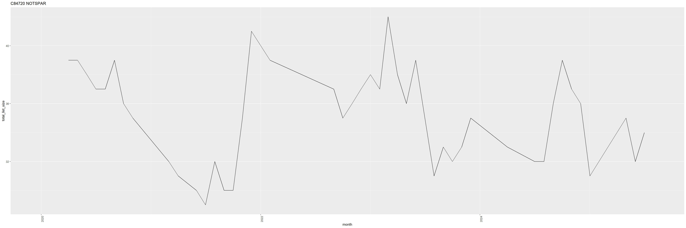
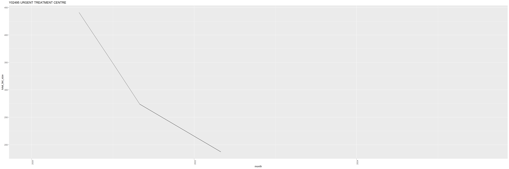
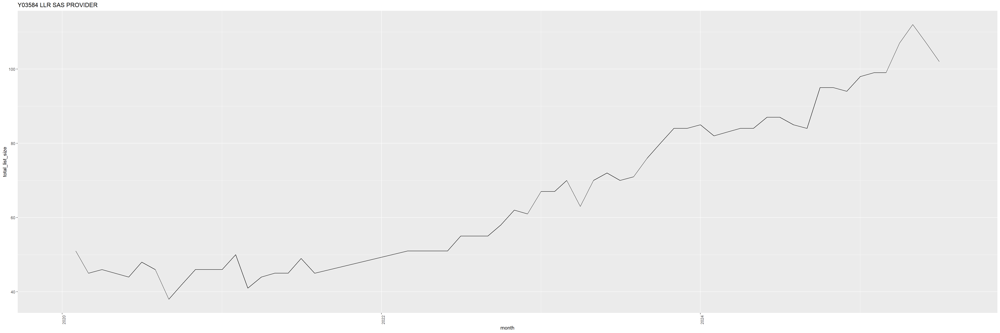
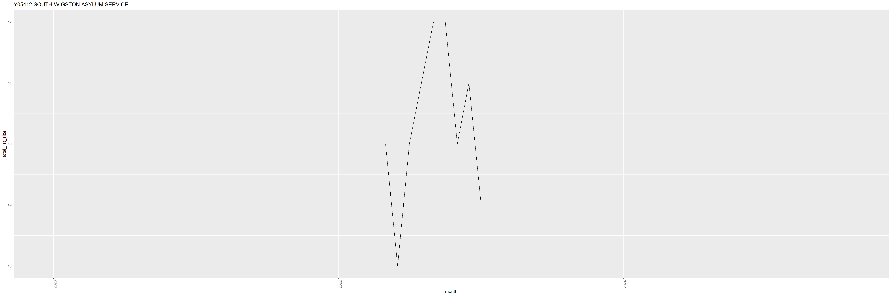
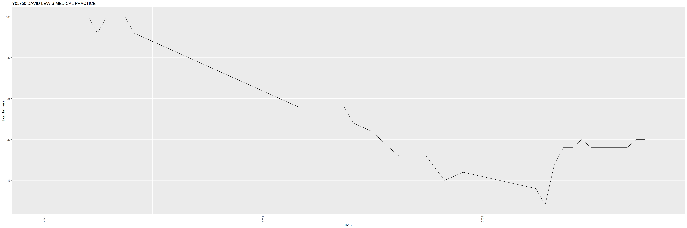
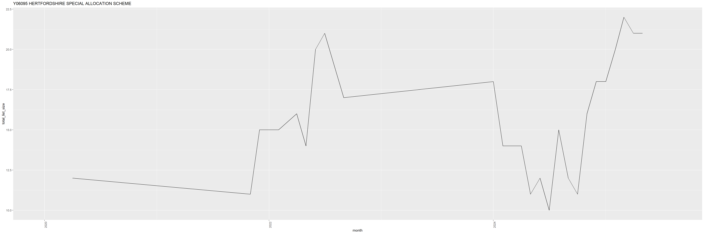
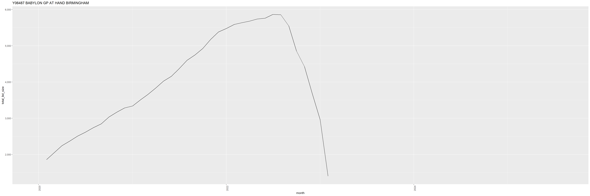
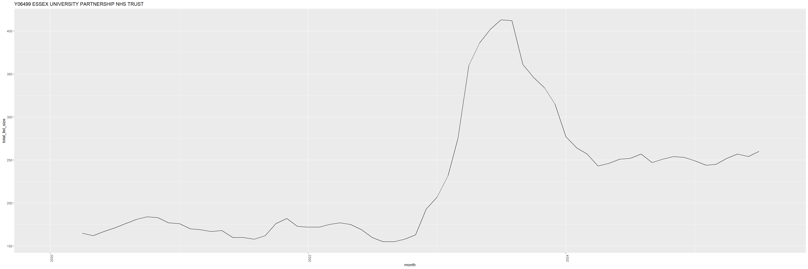
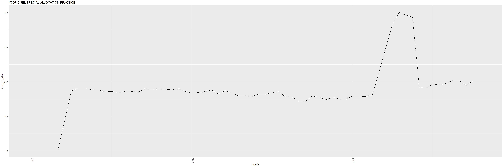
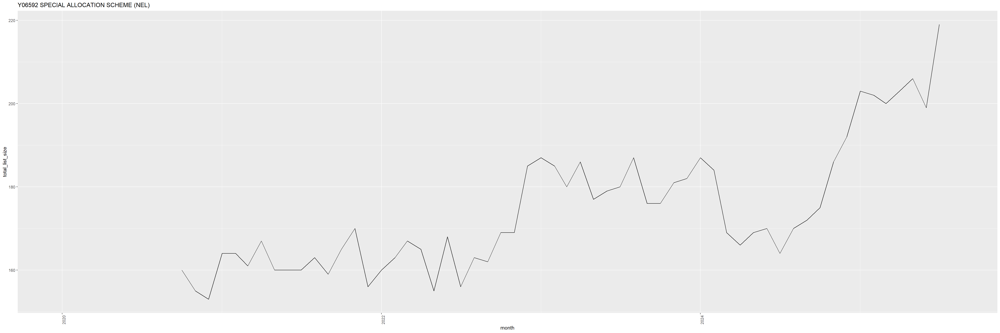
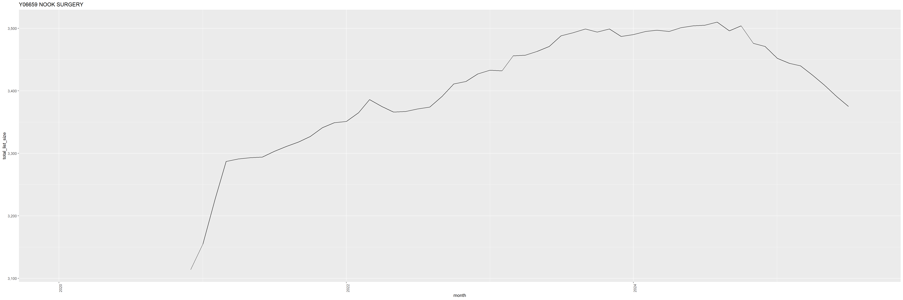
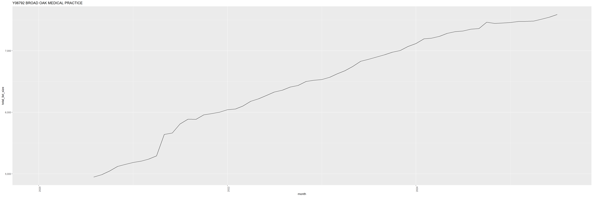
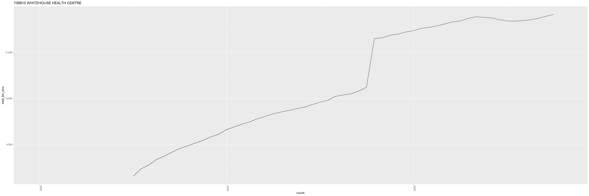
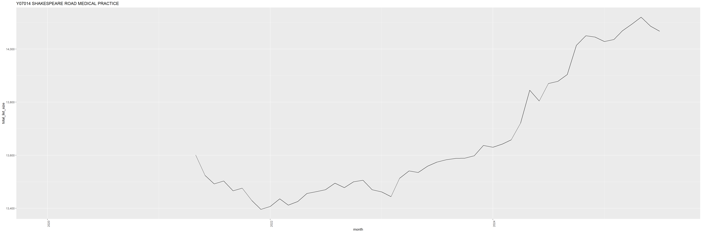
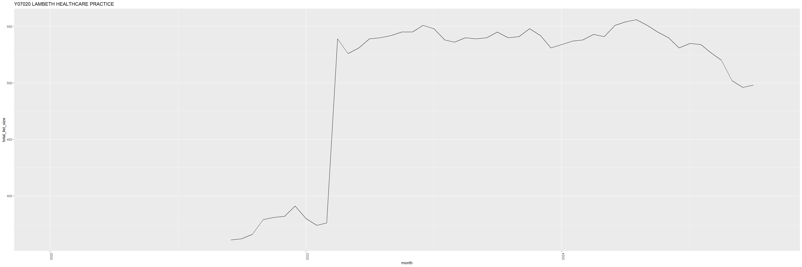
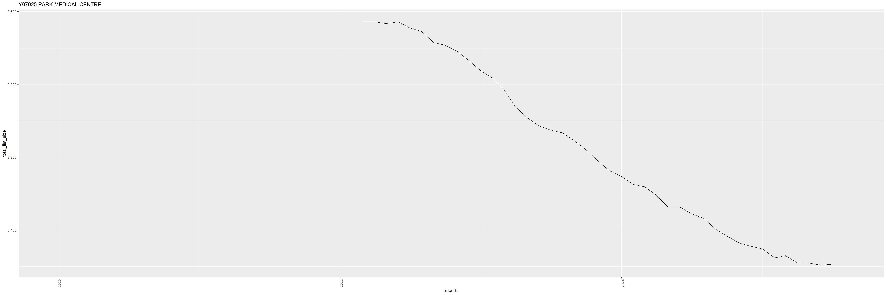
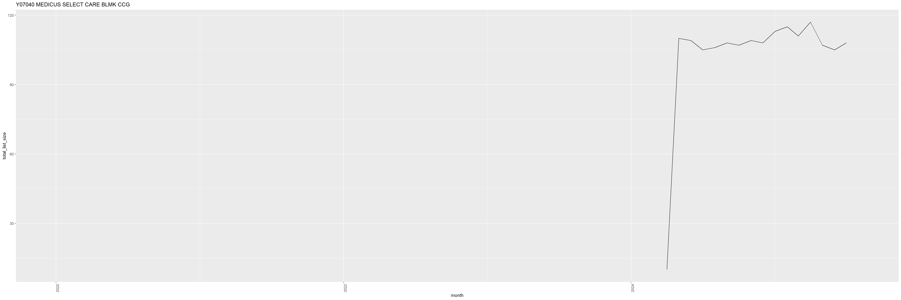
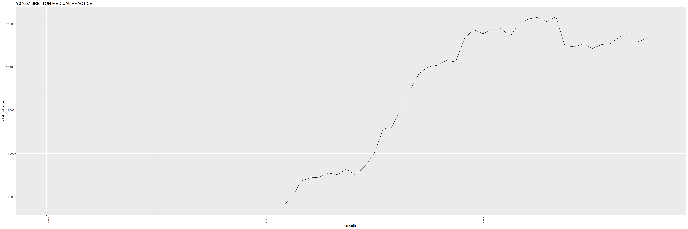
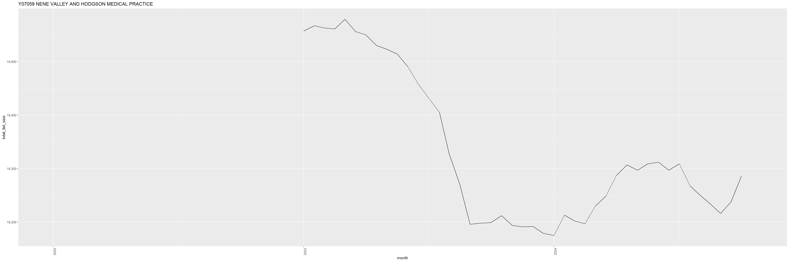
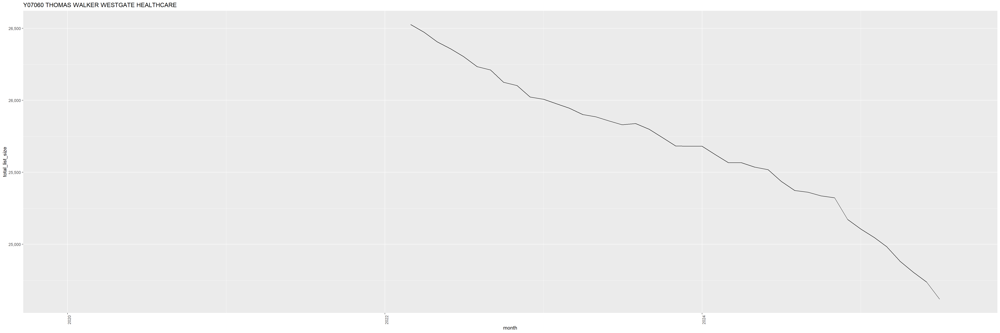
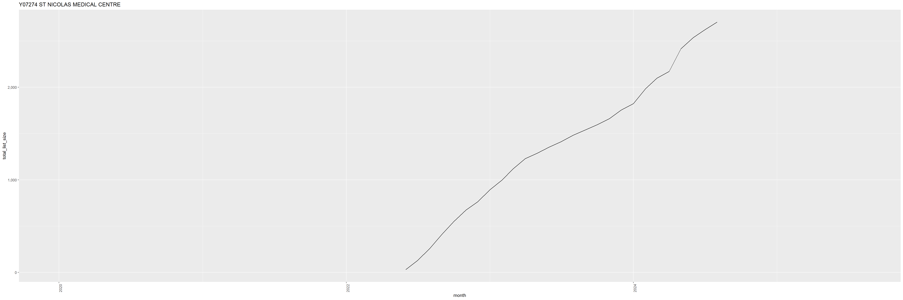
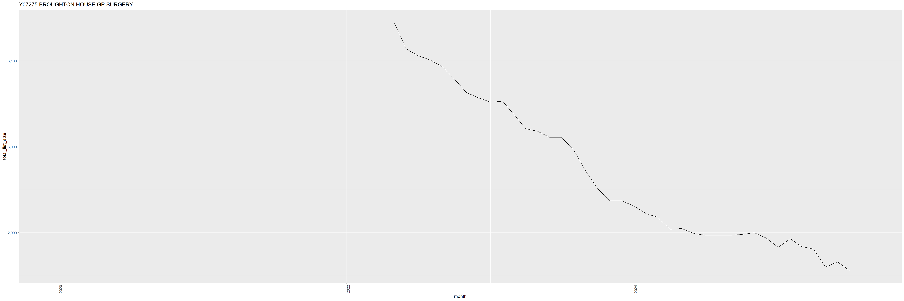
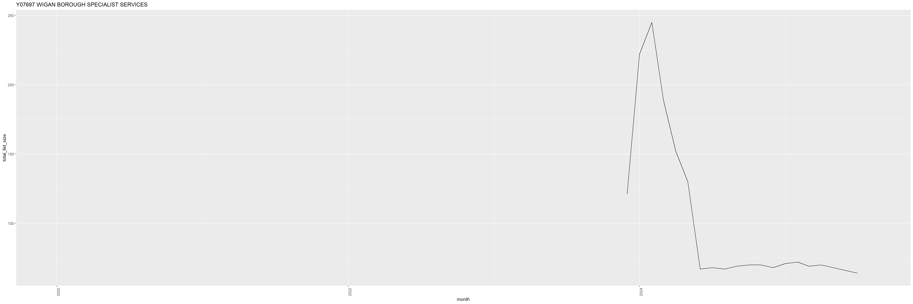
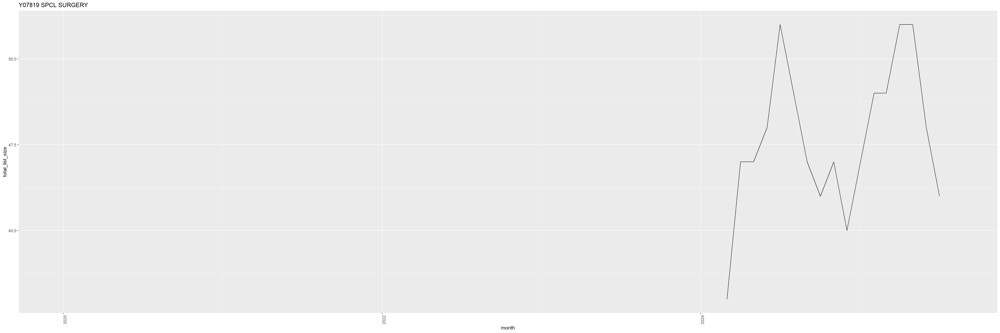
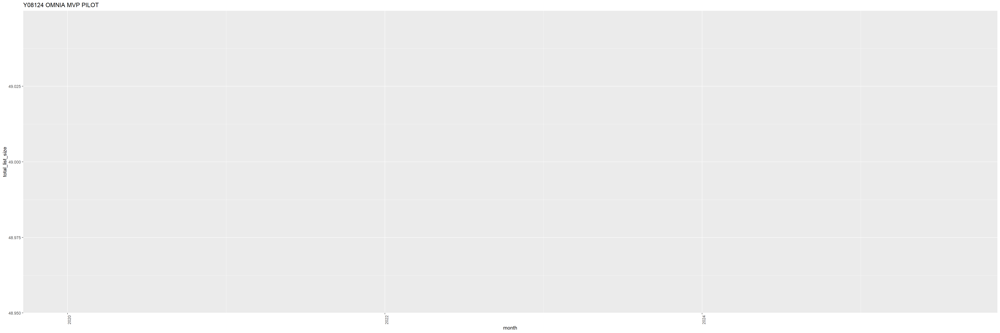
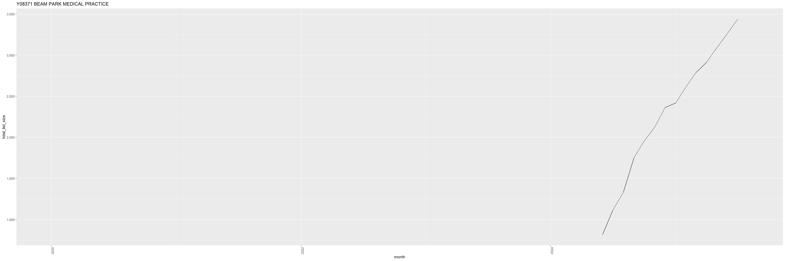
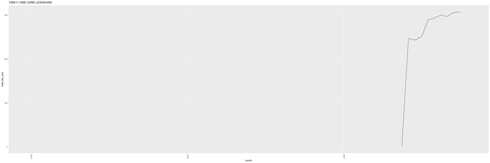
“Closing” practices
Similarly, I defined closing practices as practices with no atorvastatin prescribing at the end of the study period. There were 600 practices that opened during the study period. In order to investigate if there is any pattern to closing practices I plotted their list size per month. I have included a selection of these plots which are indicative of 4 differnet patterns.